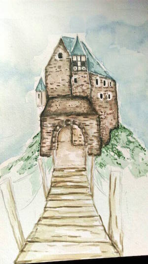
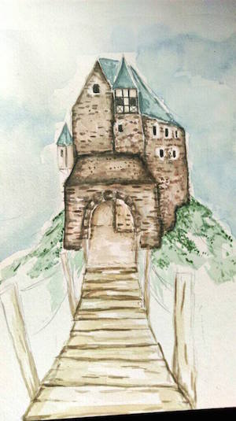

Nächtliches Wettrennen
Ich rannte ohne wirklich zu wissen wer mich verfolgte. Meine Umgebung verschwamm zu einer einzig schwarzen Masse.
Ich konnte nichts weiter wahrnehmen, als meine schweren Atem und die Schmerzen in meine Beinen. Vor mir tauchte eine Straßenlaterne den Weg für ein paar Meter in helles Licht, gerade lang genug, um einen Blick über meine Schulter zu werfen.
Mein Haare flogen mir dabei um das Gesicht und mir war es, als würde ich für wenige Augenblicke einen Schatten sehen, der aber sogleich verschwand, als ich den Lichtkegeln der Laterne verließ.
Zurück blieb nur das Gefühl der Bestätigung, ich fühlte mich im Recht mit der Annahme das hinter mir etwas sei.
So rannte ich weiter, immer den Gehweg entlang, am Ende würde mein Haus auf mich warten, dort wäre ich fürs erste in Sicherheit.
Doch im Moment griff die kalte Angst nach mir und somit versuchte ich noch schneller und immer schneller zu rennen, weiter bloß weg von dem was mich verfolgte.
Ich fühlte mich als würde ich fliegen, so furchterregend die Situation eben noch gewesen war, nun hatte ich das Bedürfnis laut zu lachen, all die Angst und die Beklemmung aus mir mir heraus fließen zu lassen.
Erneut kreuzte ich eine Straßenlaterne, die letzte vor meinem Haus.
Dieses lag in kompletter Dunkelheit, unerahnbar vor mir. Mein Vater hatte vermutlich vergessen das Licht einzuschalten, oder noch schlimmer er war bereits schlafen gegangen, ohne zu ahnen in was für eine Situation sich seine Tochter im Moment befand.
Erneut passierte ich den Lichtkegel der Straßenlaterne. Doch diesmal wagte ich keine Blick zurück. Vielleicht wären mir meine Verfolger näher gekommen, vielleicht waren sie direkt hinter mir und warten nur darauf, dass ich mich umdrehte so dass sie mich greifen konnten.
Nein ich würde mich nicht umdrehen, nicht bevor ich in Sicherheit war.
Lies weiter auf ...
 
